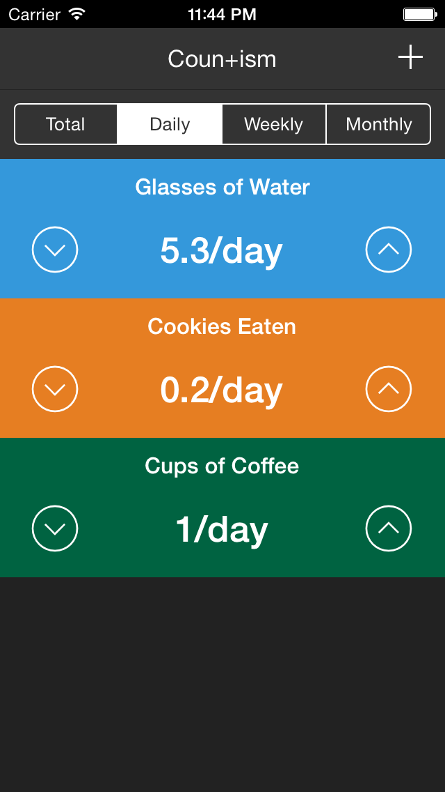
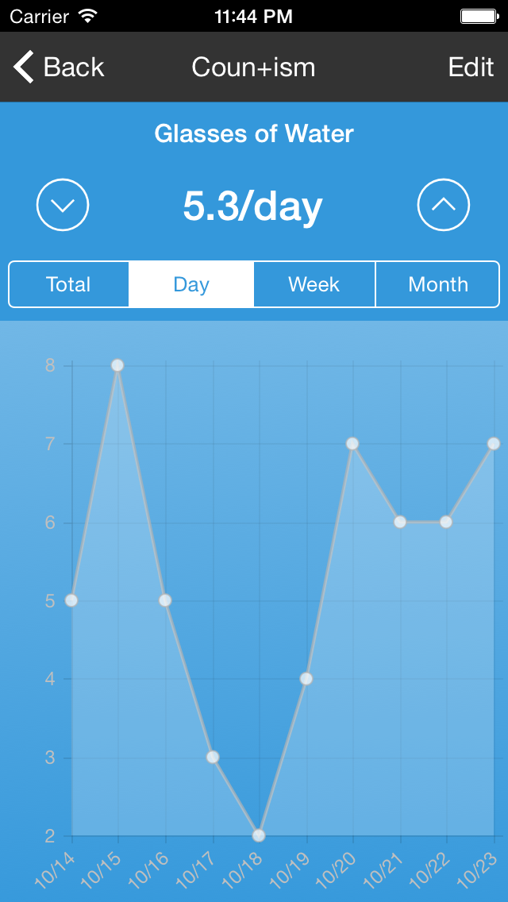
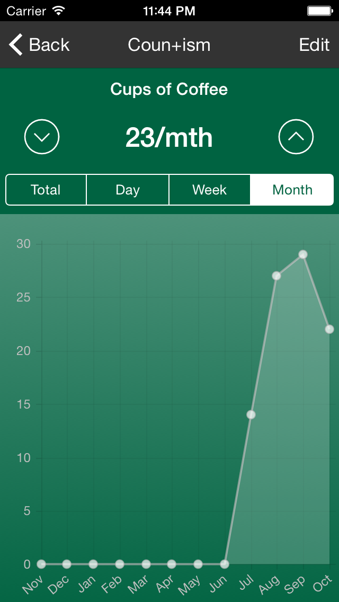
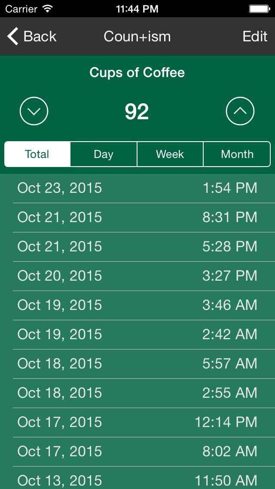

Countism
Tally Counter App with Graphs and Averages

Countism is an advanced tally counter app that will help you track everything that matters to you. Supports regular counters, time series data, graphs, averages, and more so you can see how you're doing and improving over time on the things that matter to you.
TRACK / TALLY ANYTHING:
- Hours worked
- Glasses of Water per day
- Sodas drank
- Gym visits or workouts
- Stock/inventory counts
- Customers served
- How many times you swear
- etc...
Track what matters. Change your life.



